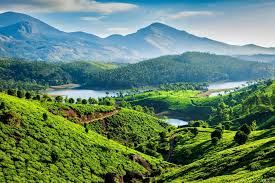
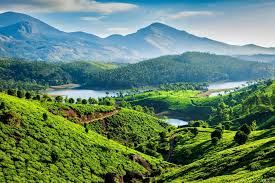

About Kerala Backwaters
The Kerala Backwaters are a network of tranquil lagoons, lakes, rivers, and canals lying parallel to the Arabian Sea coast. Famous for their houseboat cruises, lush greenery, and serene landscapes, the backwaters offer an unforgettable experience of Kerala’s natural beauty and culture.
Why Visit?
- Enjoy a peaceful houseboat stay with traditional Kerala meals.
- Explore lush coconut palms, paddy fields, and villages along the waterways.
- Witness unique bird species and wildlife in natural surroundings.
- Experience Kerala’s Ayurveda and cultural traditions.
Location & Travel
Main Backwater Destinations: Alleppey (Alappuzha), Kumarakom, Kollam.
Nearest Airport: Cochin International Airport (~75 km from Alleppey).
Nearest Railway Station: Alleppey Railway Station.
Well connected by road from Kochi, Trivandrum, and other major Kerala cities.
Visiting Details
- Best Time to Visit: November to February (cool and pleasant weather).
- Houseboat Timings: Check-in around 12 PM, check-out by 9 AM next day.
- Houseboat Cost:
- ₹6,000 – ₹10,000 per night (standard houseboats).
- ₹12,000+ per night (luxury houseboats).
Average Travel Expense
A 2–3 day Kerala backwater trip including food, stay, and transport can cost around:
- Budget: ₹4,000 – ₹6,000 per day
- Mid-range: ₹7,000 – ₹10,000 per day